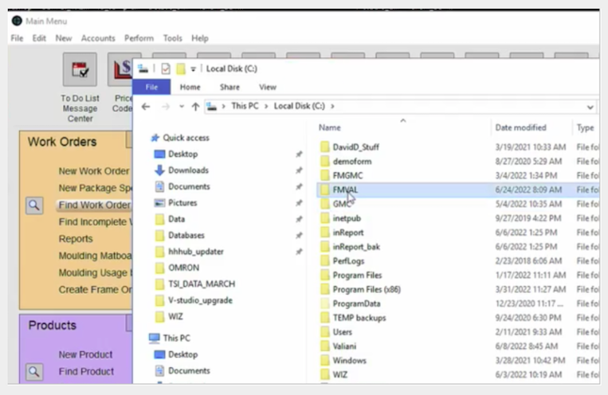
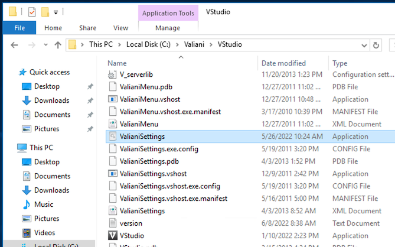
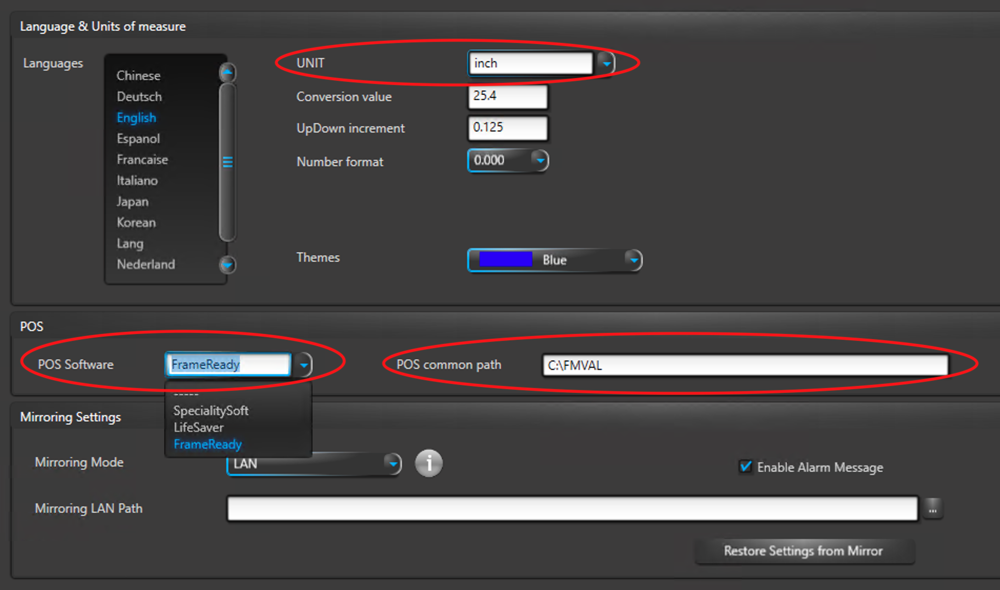
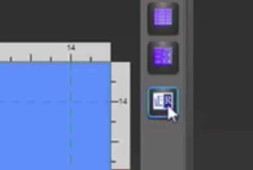
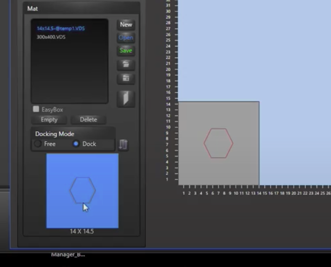
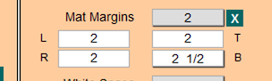
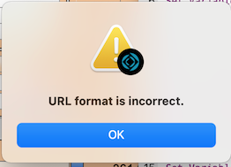
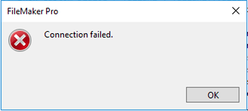
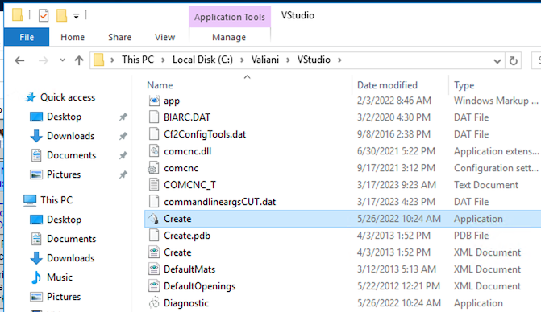

CMC Valiani FAQs
Frequently Asked Questions
I am using the Valiani integration to push a Work Order design to the Valiani “Create” program. When I select the Create option and then select a template, I get an error message pop up that says “(work order number) could not be created on this disk. Use a different name, make more room on this disk, unlock it or use a different disk.”
-
This error that you are receiving typically happens when you have not yet created the “FMVAL” folder on your C:/ drive on your Windows machine.
-
Follow the instructions to guide you through how to create this folder: CMC Valiani. Make sure, when you create the FMVAL folder, that you set the permissions for the folder to Read/Write so that FrameReady can save the Valiani files to the folder.

I am in the Valiani “Create” software and I am ready to push my design back into the FrameReady program. However, I do not see the button to initiate the push back into FrameReady in the Valiani software. Where is it?
-
This happens when the POS option has not been set during the initial set up of the Valiani integration.
-
You will need to set a few options in the Valiani settings file when getting the Valiani integration set up to run with FrameReady. To access the Valiani Settings file you will need to go to the C:\ drive of your Windows machine and look into the path: “C:\Valiani\VStudio”. Inside of that folder will be a file called ValianiSettings. If you double-click that file, it will open the Valiani Settings Application where you can set a few preferences for your Valiani integration to work properly with FrameReady.

-
There are three things to check for on the main Settings page of the Valiani software to make sure that your Valiani software is set up correctly to work with FrameReady.
1.) In the middle section, under POS Software, click the dropdown menu and select FrameReady. This will add the FR button to the VStudio application so that you can push the data from the application back into FrameReady.
2.) Set the POS Common Path field to the folder where the Valiani files are saved to, which is: C:\FMVAL
3.) Change the measurement in the UNIT field to: Inches.

-
Click the blue Save button (bottom right). After the settings have been saved, you can exit the Valiani settings program and go back to using the FrameReady / Valiani integration.
You should now see the little blue FR button in Valiani Create; use it to push the information back into FrameReady.

I have created a design in Valiani VStudio Create with multiple openings. I pressed the FR button to push the information back into FrameReady and it is not bringing in the information for both openings?
-
The FrameReady / Valiani integration currently does not support designs that have multiple openings.
-
The FrameReady scripts that parse the incoming information from the Valiani Create program are only able to parse information for one opening. We are currently looking into adding support for more than one opening for Valiani integration in the future; and will keep customers updated on additional information for this feature as we progress with it in the future.
I am trying to push a design from my FrameReady Work Order to the Valiani “SmartCut” program instead of the Valiani “Create” program. I am having an issue of when I push the button for the SmartCut, it opens the SmartCut program but I am not seeing my design in the visual window in SmartCut?
-
SmartCut is set up a little bit differently than VStudio Create, as far as how it works with the FrameReady integration.
-
When SmartCut opens, it does not immediately open up to the visual view of the design that was pushed in from the FrameReady integration. There are a few steps that you need to take first before you can view the design in Valiani SmartCut.
1.) In the bottom left-hand corner, look for the Mats button and click it on or make sure the mat design is selected that you pushed into Valiani SmartCut.
2.) Double-click on the little, blue thumbnail image (bottom left corner of the SmartCut screen) to see a larger view of the Mat and opening. Then you can click the Cut button (or one of the other buttons in the program) once you have the design pulled up on the main window of the SmartCut program.

I have created a Work Order in FrameReady that I am pushing into Valiani Create program and I have set Mat Margins in the FrameReady work order. When I push the Work Order into Valiani Create, I do not see the Mat Margins coming into the “Borders” fields in Valiani Create?
-
The Mat Margins are not coming into the Borders fields in Valiani Create because the Mat Margins in FrameReady Work Orders are for calculating the total Mat size. Since the full Mat size is getting pushed into Valiani Create from FrameReady, it already has the Mat Margins built into the full size of the total Mat size. The Borders fields in Valiani Create are for a different purpose and you will need to set those manually in Valiani Create after the design has been pushed in from FrameReady.


I am using the Valiani integration and I want to use the “PULL” feature to pull in information from the Valiani Create program. When I push the “PULL” button in FrameReady Work Order module, I am getting an error on a pop up message that says “URL Format is Incorrect”?
-
This error typically happens in this situation when you are trying to pull in information into the FrameReady Work Orders on a Mac.
-
Please only use the PULL feature with the Windows computer that Valiani VStudio Create is installed on.
-
The error “URL Format Incorrect” means that the software is looking to import from a Windows-based share folder but, since you are using a Mac, it cannot locate that type of folder. While you can generate Valiani files on a Mac with FrameReady and move them to your Valiani machine, you cannot use the PULL feature on a Mac since it has to pull from the same machine that has the Valiani Create program on it.

I am using the Valiani integration and I want to use the “PULL” feature to pull in information from the Valiani Create program. When I push the “PULL” button in FrameReady Work Order module, I am getting an error on a pop up message that says “Connection failed”?
-
This message typically happens when the Valiani file is not located in the share folder to pull into the FrameReady Work Order.
-
To make sure that the Valiani file has exported correctly from Valiani VStudio Create when you click the small FR button, go to the FMVAL folder on your hard drive and look for the Valiani file that has been named with the Work Order number of the Work Order that you are trying to pull in.
If you do not see a file in the folder that matches the Work Order number, then Valiani VStudio Create was not able to successfully generate the file for you to pull back into FrameReady. At this point, try closing Valiani VStudio Create and then clicking the CMC button again on the original Work order in FrameReady to re-push the Work Order into VStudio Create. Then make the changes again, in Valiani Create, that you made and then click the little blue FR button again; the file should generate for you to PULL back into FrameReady.

I am using the Valiani FMStudio integration with FrameReady and I am having an issue when I click the VStudio Create button -- it is not opening up the Valiani VStudio Create program. I am not getting an error or anything but the program is not opening. I am using a Windows machine.
-
This usually happens when you are trying to export a Work Order from FrameReady Work Orders module on your Windows computer and the Valiani VStudio software is not properly installed or has not been licensed or configured properly.
-
First of all, make sure that you have the Valiani VStudio program installed on your Windows PC by verifying that the application exists in the Valiani folder on your Windows C:/ drive.
The full path to the application is C:\Valiani\VStudio\Create -
Once you have verified that the Valiani VStudio Create program has been installed, try and open the program manually on your Windows computer: navigate to the application folder and then double clicking the application. The program should open without any dialogs coming up warning you that you need to register or license the program.
If you see a dialog telling you to license or register the program, then please continue and make sure that all of those things have been done before you continue. Once you are able to open the program and use it without any issues, then you should restart your FrameReady program and try the process over again.If you are still having issues with the program not opening, please contact your FrameReady Support Ally to look into the issue or contact your Valiani representative and they can also look into the issue from there. If you are having issues registering your Valiani software, make sure you reach out to your Valiani representative and they can assist you at getting your program fully licensed with your license code as well as getting it properly registered.

I am using the Valiani FrameReady integration and I am trying to set up my own custom template for pricing purposes, similar to how you can set up custom templates with the Gunnar integration. I am not seeing an option to select my custom template when the template pop up screen comes up.
-
We currently are not offering the option to create your own custom templates for pricing purposes for the Valiani and the Wizard integrations.
-
We only offer this service for the Gunnar integration at the current time. This is something that we are working on building into the newer CMC integrations here in the near future. We will keep you updated on these additions to the CMC integrations here in the near future.
© 2023 Adatasol, Inc.